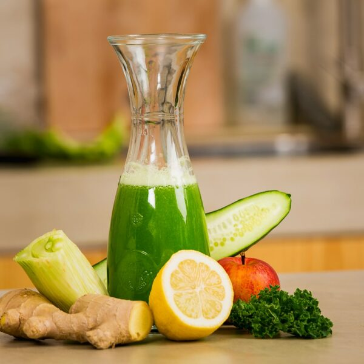
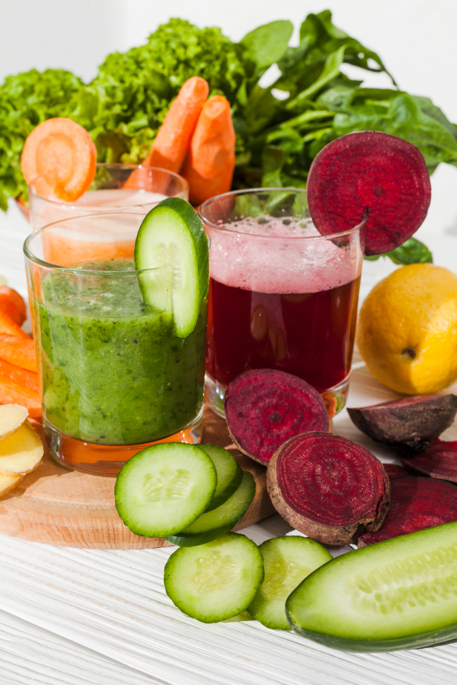
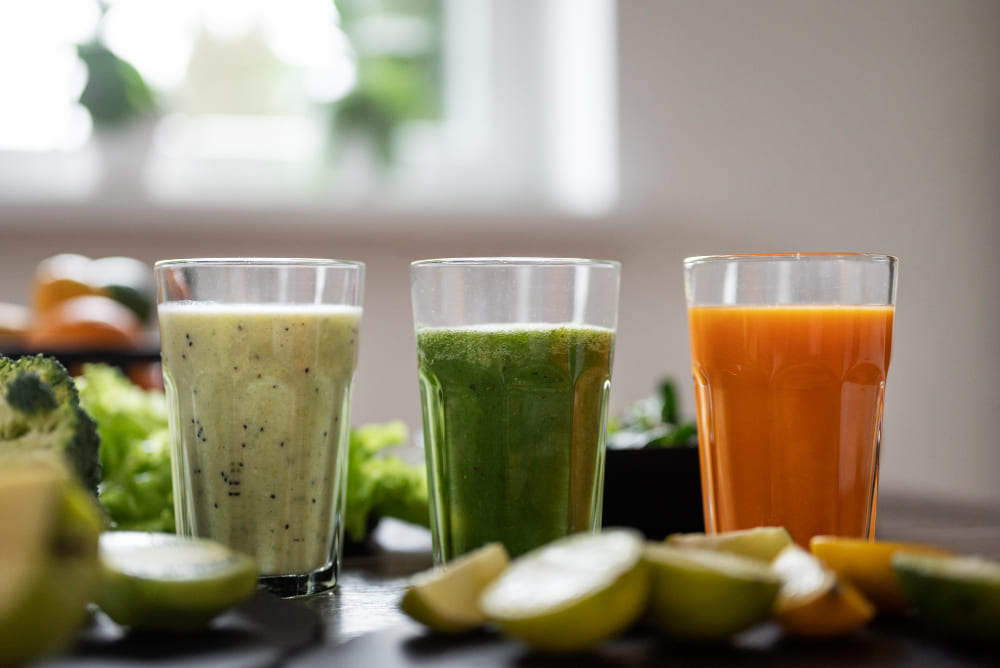
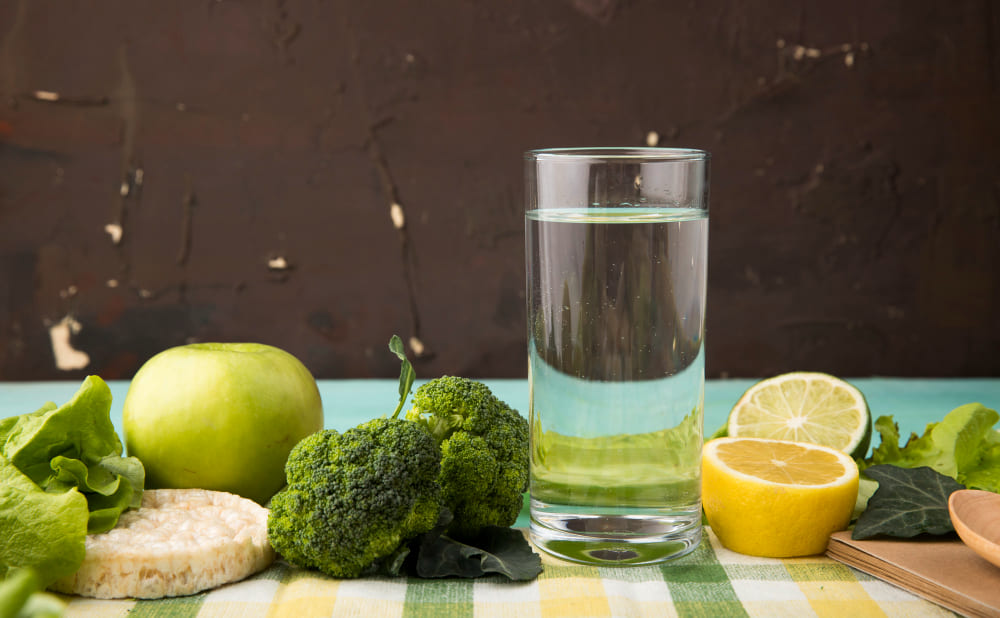

1 тиждень

Ціль і стабільність
-
Формуєш нову внутрішню ціль — не “мінус 5 кг”, а “я хочу
легкості”.
- Гіпносесія: “Підключення до внутрішньої мети”.
- Практика: як уникнути емоційних гойдалок і фіксації на їжі.
-
Вебінар від Таїсії: “Харчування, яке стабілізує нервову систему”.
- Меню “Антистрес”: прості страви, що знімають напругу.
🎯 Результат: ясність, вирівняний апетит, спокій,
зникає бажання “заїсти”.
2 тиждень

Що ти насправді заїдаєш?
- Глибока робота з емоційними тригерами.
- Практика: “Мої справжні причини переїдання”.
- Гіпносесія: “Емоційна стабільність і безпечне тіло”.
- Вебінар: “Гормони, мікробіом і енергія жінки”.
- Конструктор харчування + готове меню.
- Перша групова сесія-підтримка з дієтологом.
🎯 Результат: спокій, усвідомлення, мінус 1–2 кг
без контролю.
3 тиждень

Перепрошивка підсвідомості
- Коучинг-сесія: “Як звички формують тіло”.
- Гіпносесія: “Кодування на нові харчові патерни”.
- Практика “Їсти з любов’ю” — без заборон і провини.
- Два тренування від фітнес-тренера та йога-інструктора.
- Щоденні завдання в Telegram-боті.
- Вебінар: “Як мозок запам’ятовує нову звичку”.
🎯 Результат: тіло реагує м’яко, апетит природний,
звички закріплюються.
4 тиждень

Тіло, я тобі вдячна
- Практика вдячності до себе і тіла.
- Гіпносесія: “Тіло — мій союзник”.
- Фінальний вебінар з Таїсією та Олександром.
- Меню стабілізації ваги (без відкатів).
-
Підсумкова зустріч + розіграш призу (повернення вартості участі).
🎯 Результат: стабільна вага, впевненість, свобода
у тілі.